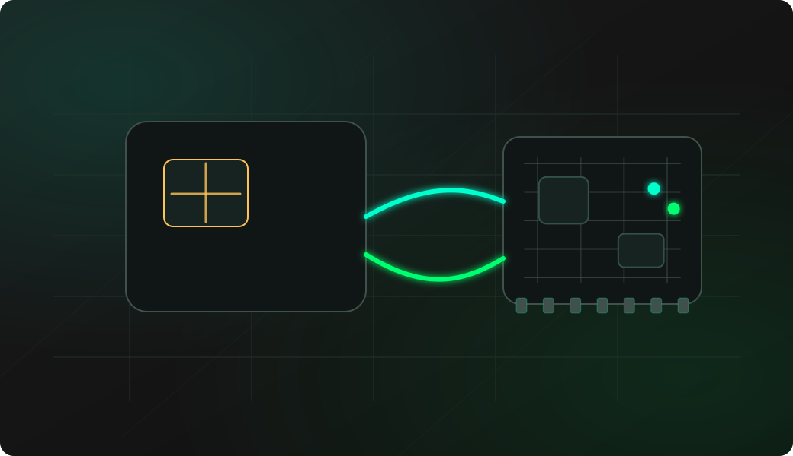

SLE4442 ATR probe
Reset the card and read the ATR first, before treating the target as a valid SLE44XX-compatible smartcard.
ESP32-S3 2-Wire SLE4442 smartcard debugging
ESP32 Bit Pirate turns a compatible ESP32-S3 board into a 2-Wire SLE4442 smartcard debugging workbench. Use it to probe ATR, inspect security status, dump memory safely and troubleshoot CLK, IO, RST and supply wiring.

Start with read-only checks. Confirm wiring, card response and security status before attempting any unlock, write, PSC or protection operation on a lab card you are allowed to test.
Connect CLK, IO, RST, VCC and GND through a known-safe smartcard socket or adapter.
Start 2WIRE mode and confirm the configured clock, data and reset pins.
Open the smartcard shell and run Probe to read the ATR.
Run Security check to record PSC retry state before any protected-memory workflow.
Make a read-only dump and save the output before experimenting with writes or protection bits.
mode 2wire
config
smartcard
sniffExample CLI flow. See the 2WIRE wiki for exact syntax, smartcard shell menu entries and firmware-specific options.
Use this overview to choose the right SLE4442 or SLE44XX workflow before opening a detailed recipe.
Reset the card and read the ATR first, before treating the target as a valid SLE44XX-compatible smartcard.
Check retry counter and protection state before any PSC, write, unlock or protect operation.
Back up the card memory before making changes, especially when working with unknown or replaceable lab cards.
Observe CLK and IO activity when you have an existing reader transaction to compare with the firmware workflow.
Assign the smartcard lines to known GPIOs before probing, then keep the setup documented for repeatable tests.
Separate wiring, contact, power and protocol-family mistakes before blaming the card or shell command.
SLE44XX cards are easy to confuse with other smartcard or memory interfaces. A small external workflow helps confirm the protocol family and capture safe baseline data.
Use the 2WIRE smartcard shell when the card is SLE4442/SLE44XX-style rather than a normal I2C EEPROM or ISO7816 UART smartcard.
Probe, check security status and dump first so experiments start from a saved baseline instead of immediately modifying memory.
Record ATR, supply voltage, retry counter and card behavior before any unlock, PSC or protect action.
These notes stay short. The detailed command references live in the project documentation and firmware repository.
SLE44XX cards use a clock line and bidirectional data line. Keep wiring short and verify the card socket contact orientation.
The RST line is part of the probe path. A missing reset connection can make the card look silent even when CLK and IO are correct.
Most SLE44XX cards expect a stable smartcard supply. Use a known-safe 3.3 V or 5 V setup and avoid unsupported levels.
SLE44XX 2-Wire is not I2C and not ISO7816 UART. Use the matching 2WIRE mode and smartcard shell.
Most failures come from card orientation, missing reset wiring, supply instability, confusing protocol families or attempting risky actions too early.
Check card orientation, VCC, GND, CLK, IO, RST and whether the card is actually SLE4442/SLE44XX-compatible.
Return to Probe first, then check contact quality, supply stability and reset wiring before reading protection state.
Do not treat SLE44XX cards as I2C EEPROMs or ISO7816 UART cards. Use 2WIRE mode and the smartcard shell.
Do not guess PSC values. Incorrect attempts can permanently lock protected zones on real cards.
Repeat the read with shorter wires, clean contacts and stable supply before comparing memory contents.
These pages are the task-level SLE4442 workflows. This overview keeps the protocol-level guidance here, while each recipe covers setup, commands and troubleshooting in detail.
This page is a protocol overview. Use the site index for the full web experience, or GitHub for source code, firmware documentation and the 2WIRE command reference.
Flash a supported ESP32-S3 board before testing 2-Wire mode from the browser.
Open Web FlasherOpen the maintained firmware wiki for 2WIRE mode, smartcard shell commands and SLE44XX notes.
Open 2WIRE command referenceCheck compatible boards and exposed GPIOs before wiring a smartcard socket.
Compare supported ESP32-S3 boardsOpen Web Serial for 2-Wire commands after the matching firmware is running.
Open Web Serial Terminal for ESP32 Bit PirateCapture CLK, IO or RST timing when you need to inspect the physical signal behavior.
Open Logic AnalyzerBrowse recipes that connect 2-Wire work to wiring, commands, captures and troubleshooting.
Browse all hardware debugging recipesCheck firmware source, issues and releases that affect 2-Wire support.
Open GitHub repositoryShort answers for common questions before moving into a detailed workflow.
Yes. ESP32 Bit Pirate can open the 2-Wire smartcard shell and probe an SLE4442 card to read its ATR before memory or security operations.
No. SLE44XX smartcards use a 2-Wire protocol path, not normal I2C and not ISO7816 serial smartcard communication.
No. Start with Probe, then Security check, then a read-only dump on cards you own or are allowed to test before any unlock, write or protect action.